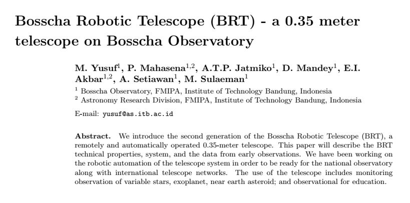
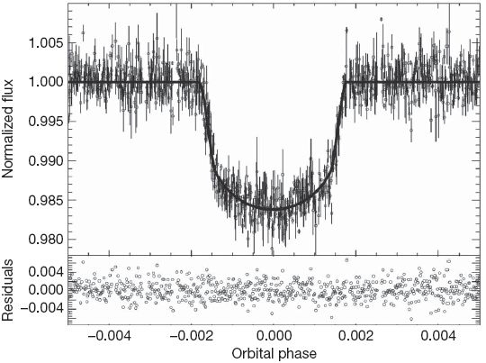

Program Pengamatan Exoplanet Observatorium Bosscha
Ek \(\cdot\) so \(\cdot\) pla \(\cdot\) net
n Astron: planet di luar tata surya
Penemuan Eksoplanet
How people think we saw exoplanets
How we really saw them
1992: Variasi Waktu
Penemuan eksoplanet pertama di pulsar PSR B1257+12
1995: Kecepatan Radial
Pegasi 51 b
Pengamatan Kecepatan Radial
1999: Fotometri Transit
HD 209458 b
Pengamatan Fotometri Transit
2008: Pencitraan Langsung
Planet ada di mana-mana
Trappist-1
Fotometri Transit Exoplanet
Kurva Cahaya Transit

- Bintang/planet
- Radius
- Periode
- Inklinasi
Fotometri Bukaan

Fotometri Diferensial

Mengukur perbedaan fluks bintang
Bintang variabel: Presisi 0.05 - 0.01 mag
Eksoplanet: Presisi 2 - 5 mmag
Menghitung Foton
… dengan akurat dan PRESISI …
… memaksimalkan SINYAL dan meminimalkan NOISE …
Rekam Jejak Pengamatan Eksoplanet di Observatorium Bosscha
2006

2014

2016



2018


| Parameter | Obs | Ref (Hebrard, 2012) |
|---|---|---|
| Periode (hari) | 1.74977* | 1.74977 |
| Eksentrisitas | 0 | 0 |
| Radius Bintang \(R_\odot\) | 0.79* | 0.79 |
| Limb Darkening u1 | 0.527 | - |
| Limb Darkening u2 | 0.179 | - |
| Durasi transit (hari) | 0.0797 | 0.0754 |
| Rasio planet bintang | 0.0275 | 0.0271 |
| Impact parameter | 0.5882 | 0.6 |
| Inklinasi | 85.235 | 85.35 |
| Radius planet | 1.275 | 1.27 |
Belum dipublikasikan (2015-2018)

Bosscha Robotic Telescope
(BRT)
Peluang Riset Eksoplanet
- Konfirmasi eksoplanet baru - proyek KELT
- Memperbarui dan mempertajam parameter planet yang telah diketahui
- Mengamati dan mencari Transit Timing Variation - proyek ETD
- Tindak lanjut pengamatan landas bumi kandidat TESS
TESS

- Survei seluruh area langit untuk bintang-bintang terang dalam jarak 200 parsek
- Mencari dan mengukur massa 50 planet dengan radius < 4 kali radius Bumi
- “Finder” untuk JWST
Spesifikasi
| Medan pandang tunggal | \(24^o \times 24^o\) |
| Medan pandang total | \(24^o \times 96^o\) |
| Diameter | 10,5 cm |
| Focal ratio | f/1,4 |
| Rentang panjang gelombang | 600 - 1000 nm |
Medan Pandang BRT

Ukuran Piksel BRT

Ukuran Piksel TESS

Ukuran Piksel TESS

Ukuran bukaan fotometri TESS

Tantangan TESS
- Cahaya beberapa bintang sangat mungkin menyatu pada citra TESS
- Penurunan intensitas cahaya bisa jadi ’eksoplanet’ atau penyebab lainnya (false positive)
- Perlu pengamatan tindak lanjut landas bumi
Identifikasi false-positive


- Bentuk kurva cahaya
- Kedalaman kurva cahaya yang silih berganti
- Variasi kedalaman pada filter yang berbeda
- Besar kedalaman
Pemanfaatan Teleskop ITB-UNDANA
- Penelitian
- Pendidikan
- Pengabdian Masyarakat
Ikhtisar
- Pengamatan eksoplanet di Observatorium Bosscha memberikan hasil yang cukup menjanjikan
- Pengembangan instrumen, pengamatan, sistem, olah data, dan analisis masih dapat dikembangkan lebih jauh
- Ajakan ke seluruh pihak untuk bergabung dalam program pengamatan eksoplanet
- Peluang kolaborasi untuk tindak lanjut TESS